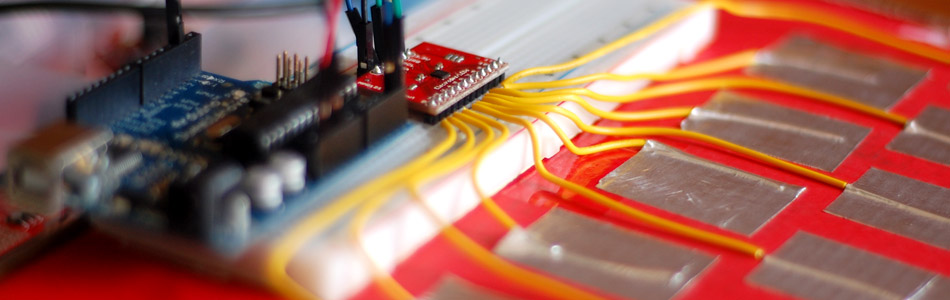

Sensing Capacitive Touch - MPR121 + Arduino

Every now and then you get sick of the typical push buttons and you want something cooler. And what is cooler than touch sensitive things? Remember that old lamp in your Grandma's that changed brightness just by touching the base? Yeah, that's right... We are talking THAT cool! The MPR121 capitative touch sensor gives you 12 of such inputs that we can use with our Arduino, and you can get it in several forms from SparkFun - Im using the basic breakout board.
How? Well... Capacitive sensing is pretty simple in concept. Every object has capacitance, (in laymen's terms capacitance is just an objects ability to hold a charge), and when you come in contact with something you change its capacitance. Well the MPR121 just looks for these changes, and tells us when it happens.
Hooking It Up
Hooking it up to your Arduino is pretty simple, the MPR121 is an I2C device. I2C is a 2-wire serial connection, so you just need to connect the SDA (Data) and SCL (Clock) lines to your Arduino for communication. On your Arduino (everything but the mega) SDA is on analog pin 4, and SCL is on analog pin 5. On an Arduino Mega, SDA is digital 20, and SCL is digital 21.
When the MPR121 senses a change, it pulls an interrupt pin LOW. Now if we were ninja's we would use this oppertunity to create an interrupt on our Arduino and deal with changed immediately. However, to simplify things for us non-ninjas, we are just going to check that pin to see if it is LOW during our loop. To do this, this sensor also needs access to another digital pin, and in this case we are using digital 2.
Electrodes
This is a touch sensor, so we need something to touch right? We call these electrodes. Typically, electrodes can just be some piece of metal, or a wire, or my favorite, metal tape (just make sure you have at least 1/2in of bare wire in contact with the sticky part of the tape for good contact). But some times depending on the length of our wire, or the material the electrode is on, it can make triggering the sensor difficult. For this reason, the MPR121 allows you to configure what is needed to trigger and untrigger an electrode. So if you are getting false or no positives, you may need to change that.
Proximity Sensing
There is a small change in capacitance even as you approach an electrode, just through the air. So if you set the touch threshold, or release threshold too low you may notice it trigger even a few inches away. If you want it to trigger from a decent distance away, the MPR121 supports aggregating all of the electrodes together to use it as a single large proximity sensor - But you will need to read the doc sheet to figure that one out, sorry.
{kind=link}
Code
You may have noticed that SparkFun has example code for this sensor already - Actually, this code is slightly based off of theirs. But this setup and code is not limited to sensing one electrode at a time like their's is. Also this is using the Wire Library to simplify the code to only 2 files. And... We can also sense when one of the electrodes is let go as well.
I know this code looks complicated, but most of it is just configuring the sensor (part based off of sparkFun's code). All it does is output in the serial terminal when one of the electrodes is touched or untouched. You can touch all of them at once if you want, and it will show that, then just let go of one, and only that one will show as let go.
Feel free to change the setup values in section C to adjust the sensitivity of the electrodes. You will see constants used in the code such as TOU_THRESH, these values are defined in mpr121.h incase you need to change them.
If you want to trigger individual functions based on the electrode touched, you could do something like this and just add the call to your function under where it says "//X was touched"
if(touchStates[i] == 0){ //pin i was just touched Serial.print("pin "); Serial.print(i); Serial.println(" was just touched"); switch (i) { case 0: //0 was touched break; case 1: //1 was touched break; case 2: //2 was touched break; case 3: //3 was touched } }
I hope this was helpful in getting your MPR121 up and running with your Arduino, and if you have any questions, please use the discussion link.
Video
Article taken from bildr.org with minor changes - I am the original author of this content